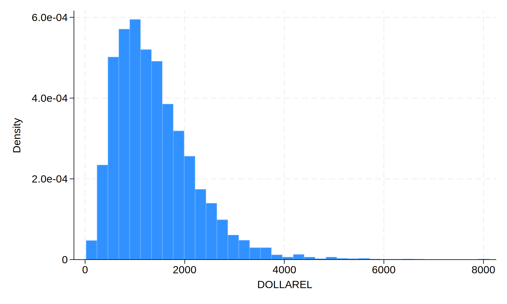
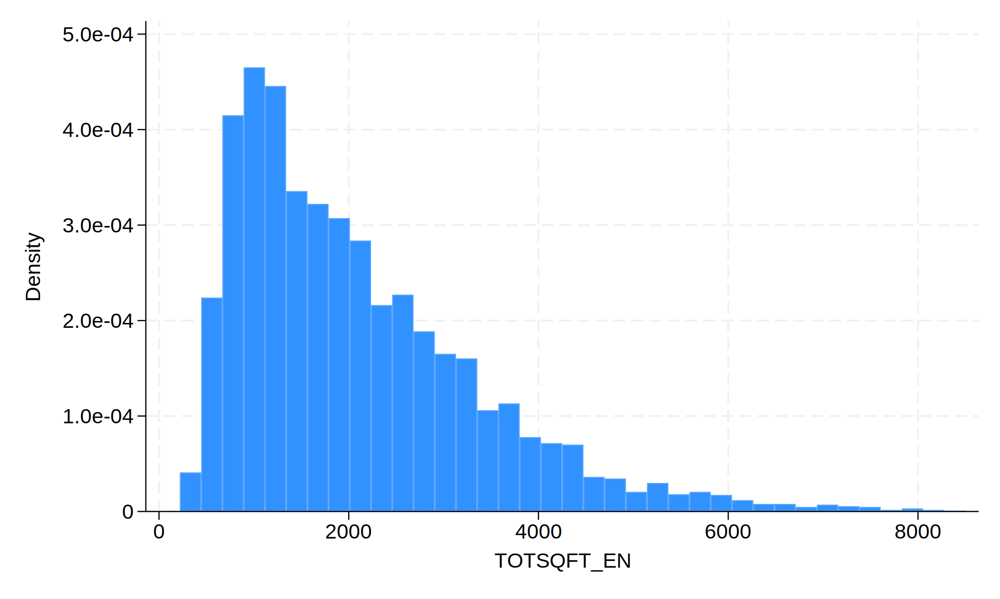
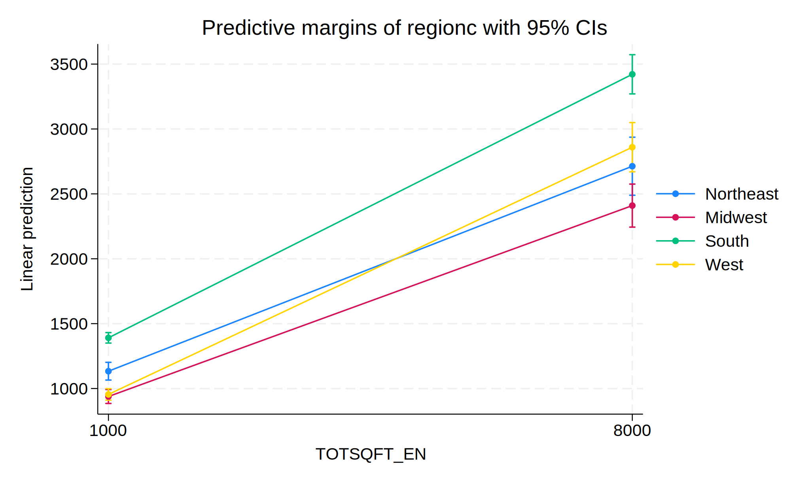
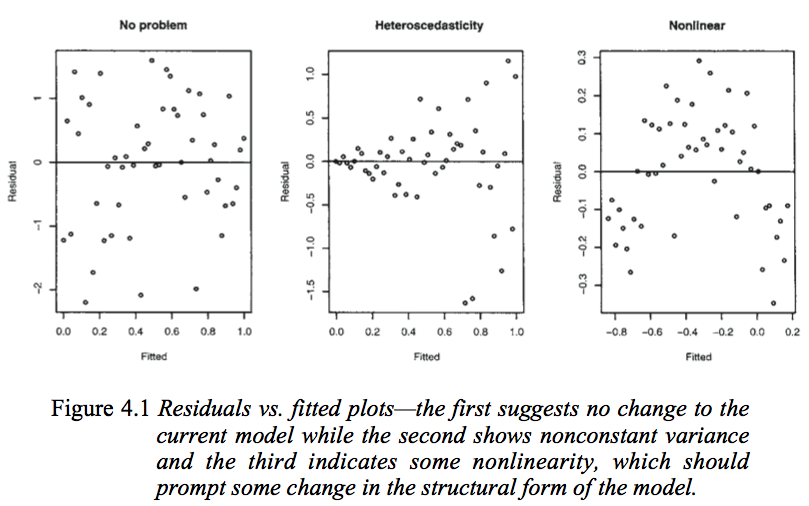
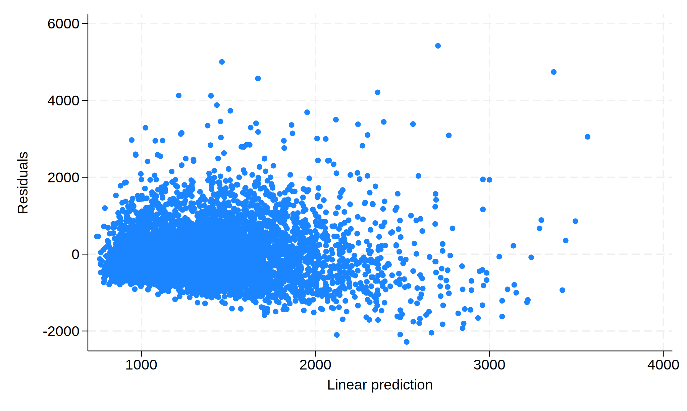
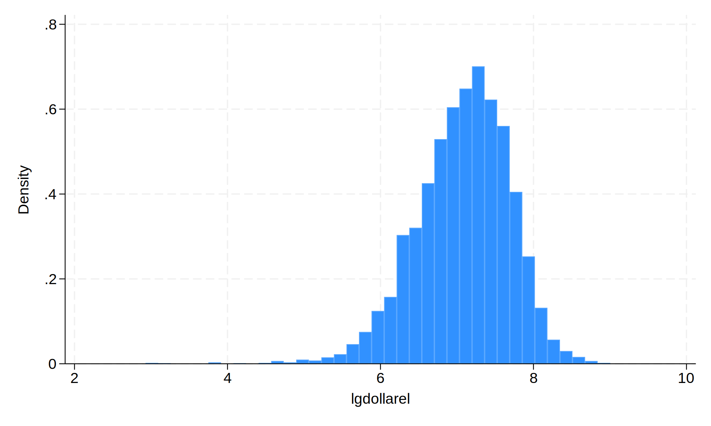

1 Ordinary Least Squares
Regression is a term for a wide range of very common statistical modeling designed to estimate the relationship between a set of variables. The nature of the variables and the hypothesized relationship between the variables affect which choice of regression is to be used.
We will start with the most basic form of regression, linear regression.
2 Terminology
When discussing any form of regression, we think of predicting the value of one variable1 based upon several other variables.
The variable we are predicting can be called the “outcome”, the “response” or the “dependent variable”.
The variables upon which we are predicting can be called “predictors”, “covariates”, or “independent variables”.
The model we’re going to start discussing is called “linear regression”. You may also have heard this called “least squares regression” or “ordinary least squares (OLS)”. A lot of the time, if you see a reference to “regression” without specifying the type, they are referring to linear regression.
3 Theory
Ordinary Least Squares regression is the most basic form of regression. This is suitable for situations where you have some number of predictor variables and the goal is to establish a linear equation which predicts a continuous outcome. Technically the outcome need not be continuous, but there are often better forms of regression to use for non-continuous outcomes. The term “linear equation” refers back to high school geometry and the equation for a line,
\[ y = mx + b \]
In that framing, the value of \(y\) can be obtained for a given value of \(x\), based upon the slope (\(m\)) and intercept (\(b\)). You can easily extend this to higher dimensions,
\[ y = mx + nz + b \]
Now the value of \(y\) also depends on \(z\) and it’s slope (\(n\)).
Linear regression fits a model based on this equation of a line:
\[ Y = \beta_0 + \beta_1X_1 + \beta_2X_2 + \cdots + \beta_pX_p + \epsilon \]
- \(Y\) represents the outcome variable.
- \(X_1, X_2, \cdots, X_p\) represent the predictors, of which there are \(p\) total.
- \(\beta_0\) represents the intercept. \(\beta_0\) represents the predicted average outcome when all \(X_i\) are 0. Often this will be nonsensical and ignored (e.g., if \(X_1\) is age, it usually makes no sense to estimate the outcome when age is 0).
- The other \(\beta\)’s are called the coefficients, and represent the relationship (slope) between each predictor and the response. We will cover their interpretation in detail later.
- \(\epsilon\) represents the error. Regression is a game of averages, but for any individual observation, the model will contain some error.
For example, the relationship between the weight of a car (in lbs) and the length of a car (in inches) is approximately2:
\[ \textrm{weight} = -3000 + 33*\textrm{length} \]
The intercept is meaningless - how many 0 length cars do you know? If we plug in a reasonable value for length, say 200 inches, we can solve for weight:
\[ \textrm{weight} = -3000 + 33*200 = 3600 \]
This is the predicted weight; for a given car of length 200, it won’t be exactly 3600 lbs, but that difference is error (\(\epsilon\)).
Stata can be used to estimate the regression coefficients in a model like the one above, and perform statistical tests of the null hypothesis that the coefficients are equal to zero (and thus that predictor variables are not important in explaining the response). Note that the response \(Y\) is modeled as a linear combination of the predictors and their coefficients.
Some introductory statistical classes distinguish between simple regression (with only a single predictor) and multiple regression (with more than one predictor). While this is useful for developing the theory of regression, simple regression is not commonly used for real analysis, as it ignores one of the main benefits of regression, controlling for other predictors (to be discussed later).
We will now fit a model, discussing assumptions afterwards, because almost all assumption checks can only occur once the model is fit!
4 Fitting the model
For demonstration purposes, we’ll use the 2015 Residential Energy Consumption Survey (RECS). This is a public data-set made available by the governmental Energy Information Administration containing household level information about “energy characteristics on the housing unit, usage patterns, and household demographics”3.
. import delimited https://www.eia.gov/consumption/residential/data/2015/csv/re
> cs2015_public_v4.csv
(encoding automatically selected: UTF-8)
(759 vars, 5,686 obs)Let’s fit a model predicting dollar expenditure on electricity (dollarel) based upon the square footage of the house (totsqft_en) and the gender of the respondent (hhsex). Before we fit the model, we want to briefly explore each variable involved.
. summarize dollarel
Variable | Obs Mean Std. dev. Min Max
-------------+---------------------------------------------------------
dollarel | 5,686 1403.779 817.4791 18.72 8121.56
. histogram dollarel
(bin=37, start=18.719999, width=218.99568)
We see here that expenditure on electricity ranges from under $ 20 to over $ 8000, though the vast majority seem to be between a few hundred dollars and $ 2000-3000. We will discuss a bit later approaches for dealing with right-skewed data.
. summarize totsqft_en
Variable | Obs Mean Std. dev. Min Max
-------------+---------------------------------------------------------
totsqft_en | 5,686 2081.444 1282.66 221 8501
. histogram totsqft_en
(bin=37, start=221, width=223.78378)
Looks very similar to dollarel.
. tab hhsex
HHSEX | Freq. Percent Cum.
------------+-----------------------------------
1 | 3,189 56.09 56.09
2 | 2,497 43.91 100.00
------------+-----------------------------------
Total | 5,686 100.00For looking at the codebook online (Excel file downloadable here), we see that 1 is female and 2 is male. Let’s generate a new variable to make this distinction more clear
. generate female = hhsex == 1
. tab female
female | Freq. Percent Cum.
------------+-----------------------------------
0 | 2,497 43.91 43.91
1 | 3,189 56.09 100.00
------------+-----------------------------------
Total | 5,686 100.00Now female will be a 1 if the respondent is female and 0 otherwise.
Stata’s regress command fit the linear regression model. The general syntax is
regress <outcome> <predictors>So we fit the model:
. regress dollarel totsqft_en female
Source | SS df MS Number of obs = 5,686
-------------+---------------------------------- F(2, 5683) = 510.07
Model | 578180835 2 289090417 Prob > F = 0.0000
Residual | 3.2209e+09 5,683 566768.676 R-squared = 0.1522
-------------+---------------------------------- Adj R-squared = 0.1519
Total | 3.7991e+09 5,685 668272.159 Root MSE = 752.84
------------------------------------------------------------------------------
dollarel | Coefficient Std. err. t P>|t| [95% conf. interval]
-------------+----------------------------------------------------------------
totsqft_en | .2488301 .0077982 31.91 0.000 .2335426 .2641175
female | 9.948172 20.15298 0.49 0.622 -29.55935 49.45569
_cons | 880.2739 22.64325 38.88 0.000 835.8845 924.6633
------------------------------------------------------------------------------There is a lot of important output here, so we will step through each piece.
First, the top left table is the ANOVA table. If you were to fit a regression model with a single categorical predictor, this would be identical to running ANOVA via oneway. In general we don’t need to interpret anything here, as there are further measures of model fit in the regression frameworks.
Next, the top right part has a series of measures.
- Regression performs complete case analysis - any observations missing any variable involved in this model is ignored in the model. Check “Number of obs” to ensure the number of observations is what you expect. Here, the data has 5,686 rows, so the regression model is using all the data (there is no missingness in the variables involved in the model4.
- The F-test which follows (
F(2, 5683)5 andProb > F) is testing the null hypothesis that all coefficients are 0. In other words, if this test fails to reject, the conclusion is the model captures no relationships. In this case, do not continue interpreting the results; your conclusion is that there is no linear relationship. If this test does reject, you can continue interpreting. - The \(R^2\) (
R-squared) is a measure of model fit. It ranges from 0 to 1 and is a percentage, explaining what percent in the variation in the response is explained by the linear relationship with the predictors. What’s considered a “large” \(R^2\) depends greatly on your field and the situation, in very general terms, .6 is good and above .8 is great. However, if you know that there are a lot of unmeasured variables, a much smaller \(R^2\) can be considered good as well. The \(R^2\) of 0.15 is low, though it’s not so close to 0 as to be meaningless. - Mathematically, adding a new predictor to the model will increase the \(R^2\), regardless of how useless the variable is.6 This makes \(R^2\) poor for model comparison, as it would always select the model with the most predictors. Instead, the adjusted \(R^2\) (
Adj R-Squared) accounts for this; it penalizes the \(R^2\) by the number of predictors in the model. Use the \(R^2\) to measure model fit, use the adjusted \(R^2\) for model comparison. - The root mean squared error (
Root MSE, as known as RMSE) is a measure of the average difference between the observed outcome and the predicted outcome. It can be used an intuitive measure of model fit, as it is on the scale of the outcome variable. So for this example, the RMSE is 752.84 so on average, this model would mis-predict the electricity expenditure by about $ 752.84. Recall that we saw before that expenditure ranged to $ 8000, so an error of $ 752.84 is low, but not insignificant.
Finally, we get to the coefficient table. Each row represents a single predictor. The _cons row is the intercept; it’s Coef. of 880.27 represents the average response when all other predictors are 0. Given that square-footage cannot be 0, this is meaningless and can be ignored. (Note that we cannot exclude the constant, we are simply ignoring it.)
Coef.: These are the \(\beta\) from the above model. We interpret each as “For a 1 increase in the value of the covariate with all other predictors held constant, we would predict this change in the response, on average.” For example, for every additional square foot in a house (while the gender of the respondent is constant), the respondent is predicted to have an average of $ 0.25 lower expenditure. It may make more sense to discuss this in terms of whole dollar changes; for every additional four square feet, we’d expect a $ 1 increase in expenditure.Std. Err.: This represents the error attached to the coefficient. This is rarely interpreted; but if it gets extremely large or extremely small (and the Coef. doesn’t likewise go to extremes), its an indication there may be something wrong.t: This is the standardized coefficient, calculated as Coef./Std. Err. We can’t directly compare the Coef.’s because of the different scales, but we can examine the standardized coefficients to get a sense of which predictor has a larger impact. In this model, we see that the impact of square footage is much more than the impact of gender.P>|t|: The p-value testing whether the coefficient is significantly different than 0. We see that the p-value on square footage is low, so therefore we have evidence that the population coefficient is not zero - implying we’ve found a relationship between square footage and expenditure. On the other hand, the p-value for female is high, so cannot reject the possibility that the coefficient is zero and that there is no relationship.[95% Conf. interval]: A range of possible values.
Whenever we look at any model, a distinction needs to be drawn between statistical significance and practical significance. While these two interpretations of significance often align, they are not guaranteed to. We often have statistical significance (a p-value less than .05) when there is no practical significance (aka clinical significance, a difference that isn’t scientifically interesting). This is mostly a function of sample size; with a large sample even very small effects can have small p-values. Alternatively, a large practical significance with a low statistical significance can occur with very noisy data or a small sample size, which might indicate further study with a larger sample is needed.
In this example, the gender difference may qualify - the model is estimating that women respondents pay almost $10 more than men on average, however, this coefficient is not statistically distinguishable from 0. The confidence interval, ranging from -30 to 50, it extremely wide. It’s possible that there is a different between the genders of the respondent, but the estimate is small and noisy - and our sample size is not sufficient. All we can conclusively say is that we do not have enough evidence to claim there is a difference in gender.
5 Including categorical predictors
Let’s say we want to add some location information to the model. There is a variable (regionc) that identifies which region (Northeast, Midwest, South, West) the respondent lives in. It’s reasonable to test whether the energy expenditures differs by region, regardless of the size of the home. Let’s naively add it to the model.
. regress dollarel totsqft_en female regionc
Source | SS df MS Number of obs = 5,686
-------------+---------------------------------- F(3, 5682) = 341.91
Model | 580955318 3 193651773 Prob > F = 0.0000
Residual | 3.2182e+09 5,682 566380.131 R-squared = 0.1529
-------------+---------------------------------- Adj R-squared = 0.1525
Total | 3.7991e+09 5,685 668272.159 Root MSE = 752.58
------------------------------------------------------------------------------
dollarel | Coefficient Std. err. t P>|t| [95% conf. interval]
-------------+----------------------------------------------------------------
totsqft_en | .2509478 .007854 31.95 0.000 .2355509 .2663448
female | 8.408325 20.15808 0.42 0.677 -31.1092 47.92585
regionc | 22.18368 10.02297 2.21 0.027 2.534829 41.83253
_cons | 815.4844 37.0037 22.04 0.000 742.9431 888.0258
------------------------------------------------------------------------------We only get a single coefficient. What is the interpretation of it? There is none. Stata is treating region as continuous. Regression models cannot use categorical predictors. Instead, the regression model requires a series a dummy variables (e.g. northwest - Is this respondent in the Northwest? south - Is this respondent in the South?) for which each respondent has a single positive (1) response and the remainder negative (0) responses.
While we could create this ourselves7, something we’d likely have to do in a software like SPSS, but Stata (and most modern software) can handle this automatically. The issue is that Stata doesn’t know we want to treat regionc as categorical. If we prefix the variable name with i., Stata will know it is categorical.
First, let’s look at the regions and add appropriate labels from the codebook.
. tab regionc
REGIONC | Freq. Percent Cum.
------------+-----------------------------------
1 | 794 13.96 13.96
2 | 1,327 23.34 37.30
3 | 2,010 35.35 72.65
4 | 1,555 27.35 100.00
------------+-----------------------------------
Total | 5,686 100.00
. label define region 1 "Northeast" 2 "Midwest" 3 "South" 4 "West"
. label values regionc region. regress dollarel totsqft_en female i.regionc
Source | SS df MS Number of obs = 5,686
-------------+---------------------------------- F(5, 5680) = 341.89
Model | 878884056 5 175776811 Prob > F = 0.0000
Residual | 2.9202e+09 5,680 514127.318 R-squared = 0.2313
-------------+---------------------------------- Adj R-squared = 0.2307
Total | 3.7991e+09 5,685 668272.159 Root MSE = 717.03
------------------------------------------------------------------------------
dollarel | Coefficient Std. err. t P>|t| [95% conf. interval]
-------------+----------------------------------------------------------------
totsqft_en | .2549572 .0074959 34.01 0.000 .2402624 .269652
female | -3.459778 19.21206 -0.18 0.857 -41.12274 34.20319
|
regionc |
Midwest | -217.8519 32.17695 -6.77 0.000 -280.931 -154.7728
South | 329.5928 30.1096 10.95 0.000 270.5665 388.6191
West | -127.7622 31.41033 -4.07 0.000 -189.3384 -66.18594
|
_cons | 844.312 32.41159 26.05 0.000 780.7729 907.8511
------------------------------------------------------------------------------(Note: Older versions of Stata require prefacing the command with xi: before it would recognize the i., e.g. xi: regress dollarel totsqft_en female i.regionc. xi: was deprecated a number of years ago, but you may see this used in older code online or by users who do not stay up to date.)
This model is improved, considering the Adjusted \(R^2\) values. The coefficient (and significance) on square footage is not really changed, but notice the magnitude of the coefficient on female has changed drastically. This implies that gender and region were correlated, and when we did not control for region, gender was including it’s effect. We will discuss multicollinearity later, as well as why this is one reason why model selection is bad.
Now we see 3 rows for regionc, each corresponding to a comparison between region “Northeast” and the given row. When we include a categorical variable, one group is excluded as the baseline. By default, Stata removes the first group (here 1, Northeast). So we can see that the Midwest compared to the northeast has statistically significantly lower expenditure, with an average reduction of $ 217.85. Those in the South have higher average expenditure compared to Northeast, and those in the West have lower average expenditure.
We do not see a comparison of, for example, South versus West. To see the other comparisons we can use the margins command.
. margins regionc
Predictive margins Number of obs = 5,686
Model VCE: OLS
Expression: Linear prediction, predict()
------------------------------------------------------------------------------
| Delta-method
| Margin std. err. t P>|t| [95% conf. interval]
-------------+----------------------------------------------------------------
regionc |
Northeast | 1373.051 25.47904 53.89 0.000 1323.102 1422.999
Midwest | 1155.199 19.7725 58.42 0.000 1116.437 1193.96
South | 1702.643 16.00258 106.40 0.000 1671.272 1734.015
West | 1245.288 18.25815 68.20 0.000 1209.496 1281.081
------------------------------------------------------------------------------
. margins regionc, pwcompare(pv)
Pairwise comparisons of predictive margins Number of obs = 5,686
Model VCE: OLS
Expression: Linear prediction, predict()
--------------------------------------------------------------
| Delta-method Unadjusted
| Contrast std. err. t P>|t|
----------------------+---------------------------------------
regionc |
Midwest vs Northeast | -217.8519 32.17695 -6.77 0.000
South vs Northeast | 329.5928 30.1096 10.95 0.000
West vs Northeast | -127.7622 31.41033 -4.07 0.000
South vs Midwest | 547.4447 25.47192 21.49 0.000
West vs Midwest | 90.08975 27.02674 3.33 0.001
West vs South | -457.355 24.24899 -18.86 0.000
--------------------------------------------------------------The first margins call, without any options, displays the marginal means for each category - if every respondent was from the given region, what is the average predicted expenditure. The t-test here is useless - it’s only testing that the average expenditure is non-zero. We see that the lowest average expenditure is in the Midwest, the highest in the South.
The second margins call adds the pwcompare(pv) option, which performs pairwise test between each pair of regions. This is similar to a post-hoc test from ANOVA if you are familiar with it. All regions are statistically significant from each other. Notice that the three comparisons to Northwest are identical to the results in the regression output.
By default, using i. makes the first level (lowest numerical value) as the reference category. You can adjust this by using ib#. instead, such as:
. regress dollarel totsqft_en female ib2.regionc
Source | SS df MS Number of obs = 5,686
-------------+---------------------------------- F(5, 5680) = 341.89
Model | 878884056 5 175776811 Prob > F = 0.0000
Residual | 2.9202e+09 5,680 514127.318 R-squared = 0.2313
-------------+---------------------------------- Adj R-squared = 0.2307
Total | 3.7991e+09 5,685 668272.159 Root MSE = 717.03
------------------------------------------------------------------------------
dollarel | Coefficient Std. err. t P>|t| [95% conf. interval]
-------------+----------------------------------------------------------------
totsqft_en | .2549572 .0074959 34.01 0.000 .2402624 .269652
female | -3.459778 19.21206 -0.18 0.857 -41.12274 34.20319
|
regionc |
Northeast | 217.8519 32.17695 6.77 0.000 154.7728 280.931
South | 547.4447 25.47192 21.49 0.000 497.5101 597.3794
West | 90.08975 27.02674 3.33 0.001 37.10703 143.0725
|
_cons | 626.4601 28.51125 21.97 0.000 570.5672 682.3531
------------------------------------------------------------------------------This does not fit a different model. Both models (with i.regionc and ib2.regionc) are identical, we’re just seeing slight variations. If the models do change (especially the model fit numbers in the top right), something has gone wrong. So what’s the point of this - well sometimes you only care about comparisons to a single baseline group. In that case, if you make that group the proper reference category, you don’t need to use margins.
6 Interactions
Each coefficient we’ve look at so far is only testing whether there is a relationship between the predictor and response when the other predictors are held constant. What if we think the relationship changes based on the value of other predictors? For example, we might be interested in whether the relationship between square footage and expenditure differs by region.
Mathematically an interaction is nothing more than a literal multiplication. For example, if our model has only two predictors,
\[ Y = \beta_0 + \beta_1X_1 + \beta_2X_2 + \epsilon \]
then to add an interaction between \(X_1\) and \(X_2\), we simply add a new multiplicative term.
\[ Y = \beta_0 + \beta_1X_1 + \beta_2X_2 + \beta_3(X_1\times X_2) + \epsilon \]
- \(\beta_1\) represents the relationship between \(X_1\) and \(Y\) when \(X_2\) is identically equal to 0.
- \(\beta_2\) represents the relationship between \(X_2\) and \(Y\) when \(X_1\) is identically equal to 0.
- \(\beta_3\) represents both:
- the change in the relationship between \(X_1\) and \(Y\) as \(X_2\) changes.
- the change in the relationship between \(X_2\) and \(Y\) as \(X_1\) changes.
Adding these to the regress call is almost as easy. We’ll use # or ## instead. # includes only the interaction, whereas ## includes both the interaction and the main effects.
a#b: Only the interaction (forcing \(\beta_1\) and \(\beta_2\) in the example above to be identically 0 - so rarely used).a##b: Main effect fora, main effect forb, and the interaction (most common way of specifying).a b a#b: Same asa##ba b a##b: Same asa##b, except it’ll be uglier because you’re including main effects twice and one will be ignored.
. regress dollarel c.totsqft_en##i.regionc female
Source | SS df MS Number of obs = 5,686
-------------+---------------------------------- F(8, 5677) = 216.96
Model | 889575205 8 111196901 Prob > F = 0.0000
Residual | 2.9096e+09 5,677 512515.768 R-squared = 0.2342
-------------+---------------------------------- Adj R-squared = 0.2331
Total | 3.7991e+09 5,685 668272.159 Root MSE = 715.9
------------------------------------------------------------------------------
dollarel | Coefficient Std. err. t P>|t| [95% conf. interval]
-------------+----------------------------------------------------------------
totsqft_en | .2256478 .019295 11.69 0.000 .1878222 .2634734
|
regionc |
Midwest | -179.3634 63.44754 -2.83 0.005 -303.7449 -54.98203
South | 192.7394 58.49142 3.30 0.001 78.07387 307.4049
West | -225.2264 60.58155 -3.72 0.000 -343.9894 -106.4634
|
regionc#|
c.totsqft_en |
Midwest | -.015502 .0241206 -0.64 0.520 -.0627876 .0317836
South | .0644545 .0230569 2.80 0.005 .0192541 .1096549
West | .0464635 .0247323 1.88 0.060 -.0020214 .0949483
|
female | -4.840323 19.18555 -0.25 0.801 -42.45132 32.77068
_cons | 910.6219 51.27115 17.76 0.000 810.1109 1011.133
------------------------------------------------------------------------------Note that we used c., similar to i.. c. forces Stata to treat it as continuous. Stata assumes anything in an interaction is categorical, so we need c. here! This can get pretty confusing, but it’s never wrong to include i. or c. when specifying a regression.
Once we include an interaction, the relationship between the variables included in the interaction and the response are not constant - the relationship depends on the value of the other interacted variables. This can be hard to visualize with the basic regression output, so we’ll look at margins again instead. We’ll want to look at the relationship between square footage and expenditure in each region.
. margins region, dydx(totsqft_en)
Average marginal effects Number of obs = 5,686
Model VCE: OLS
Expression: Linear prediction, predict()
dy/dx wrt: totsqft_en
------------------------------------------------------------------------------
| Delta-method
| dy/dx std. err. t P>|t| [95% conf. interval]
-------------+----------------------------------------------------------------
totsqft_en |
regionc |
Northeast | .2256478 .019295 11.69 0.000 .1878222 .2634734
Midwest | .2101457 .0144893 14.50 0.000 .1817411 .2385503
South | .2901023 .0126292 22.97 0.000 .2653443 .3148603
West | .2721112 .0154829 17.57 0.000 .2417589 .3024636
------------------------------------------------------------------------------The dydx() option specifies that instead of marginal means (as we had above), we want to look at marginal slopes - that is, the slope between square footage and expenditure in each region. Recall that without the interaction the coefficient associated with square footage was approximately .25. Here we see that in the South and West that relationship is actually steeper, while in the Northeast and Midwest it’s shallower. The t-tests are testing whether the slope in each region is significantly different than zero.
Note that the slope in Northeast in the margins call is identical to the main effect of square footage. The margins command is not telling us anything we could not have obtained or calculated from the regression output - it’s just doing so with minimal effort and maximal clarity.
Let’s test whether the slopes differ between regions.
. margins region, dydx(totsqft_en) pwcompare(pv)
Pairwise comparisons of average marginal effects
Model VCE: OLS Number of obs = 5,686
Expression: Linear prediction, predict()
dy/dx wrt: totsqft_en
--------------------------------------------------------------
| Contrast Delta-method Unadjusted
| dy/dx std. err. t P>|t|
----------------------+---------------------------------------
totsqft_en |
regionc |
Midwest vs Northeast | -.015502 .0241206 -0.64 0.520
South vs Northeast | .0644545 .0230569 2.80 0.005
West vs Northeast | .0464635 .0247323 1.88 0.060
South vs Midwest | .0799565 .0192133 4.16 0.000
West vs Midwest | .0619655 .0211922 2.92 0.003
West vs South | -.017991 .0199749 -0.90 0.368
--------------------------------------------------------------It can sometimes be tricky to look at these tests and determine what it is telling us, but what this is basically saying is that Northeast and Midwest have the same slope, and South and West have the same slope. Then Northeast/Midwest is different than South/West. There’s a bit of confusion because West and Northeast are not statistically distinguishable (although .6 is extremely close to significance). This sort of thing happens often with multiple pairwise comparison, it’s best to try and focus on the overarching result instead of getting bogged down in details.
We can call margins with slightly different options to be able to produce an interaction plot. Rather than using the dydx option, we’ll use the at option to estimate marginal means at specific values of square footage.
. margins region, at(totsqft_en = (1000 8000))
Predictive margins Number of obs = 5,686
Model VCE: OLS
Expression: Linear prediction, predict()
1._at: totsqft_en = 1000
2._at: totsqft_en = 8000
------------------------------------------------------------------------------
| Delta-method
| Margin std. err. t P>|t| [95% conf. interval]
-------------+----------------------------------------------------------------
_at#regionc |
1#Northeast | 1133.555 34.86327 32.51 0.000 1065.21 1201.9
1#Midwest | 938.6895 27.43586 34.21 0.000 884.9048 992.4743
1#South | 1390.749 20.60539 67.49 0.000 1350.354 1431.143
1#West | 954.7921 22.54524 42.35 0.000 910.5948 998.9893
2#Northeast | 2713.089 114.0663 23.79 0.000 2489.476 2936.703
2#Midwest | 2409.71 84.60702 28.48 0.000 2243.848 2575.572
2#South | 3421.465 77.06117 44.40 0.000 3270.396 3572.534
2#West | 2859.571 96.7352 29.56 0.000 2669.933 3049.209
------------------------------------------------------------------------------Follow this with a call to marginsplot:
. marginsplot
Variables that uniquely identify margins: totsqft_en regionc
There isn’t too much interesting here that we haven’t identified before. Often there is, and this plot will be useful. You can use the pwcompare(pv) option alongside the at() option to test for differences in region at specific values of square footage.
6.1 Centering
Some sources suggest centering continuous predictors before including them in an interaction. This will change the coefficients in the regression output, but will not fit a different model. What may be useful is the main effects of terms involved in the interaction are now when the other variable is at it’s mean, rather than at 0. For example, in the model above with the interaction of square footage and region, the coefficients on region are the differences in region when square footage is 0 - not interesting. If we centered square footage, then the coefficients on region would be testing for differences when square footage is at it’s mean.
However, once again, this is not fitting a different model. The results will be identical. I’d always recommend looking at the margins and interaction plot, even if you do center.
6.2 Fitting Separate Models
A natural instinct when asking the question “does the relationship between X and Y differ by group” would be to fit separate models for each group. This is equivalent to interacting group with every predictor in the model.
The downside of this approach is that each individual model is less powerful that fitting one overall model.
The upside is that the interpretation may be a bit easier.
If you go this approach, you can use the estimates store commands to save each model, then use lrtest to compare models (test whether all coefficients are equal between models) or use suest with test to test individual coefficients. See for example this UCLA page.
7 Robust standard errors
The standard error associated with each coefficient are determined with the assumption that the model is “true” and that, were we given an infinite sample size, the estimates \(\hat{\beta}\) would converge to the true \(\beta\). In many situations, this is clearly untrue.
If you believe this is untrue, the estimates will be unaffected, but their standard errors will be incorrect. We can adjust for this by using “robust” standard errors, also known as Sandwich estimators or Huber-White estimators, with the vce(robust) option to regress.
. regress dollarel c.totsqft_en##i.regionc female, vce(robust)
Linear regression Number of obs = 5,686
F(8, 5677) = 159.38
Prob > F = 0.0000
R-squared = 0.2342
Root MSE = 715.9
------------------------------------------------------------------------------
| Robust
dollarel | Coefficient std. err. t P>|t| [95% conf. interval]
-------------+----------------------------------------------------------------
totsqft_en | .2256478 .0283384 7.96 0.000 .1700937 .2812019
|
regionc |
Midwest | -179.3634 67.18286 -2.67 0.008 -311.0675 -47.65937
South | 192.7394 70.31997 2.74 0.006 54.8854 330.5934
West | -225.2264 69.8558 -3.22 0.001 -362.1705 -88.28237
|
regionc#|
c.totsqft_en |
Midwest | -.015502 .0317276 -0.49 0.625 -.0777002 .0466961
South | .0644545 .0347077 1.86 0.063 -.0035859 .1324949
West | .0464635 .0358506 1.30 0.195 -.0238174 .1167443
|
female | -4.840323 19.27825 -0.25 0.802 -42.63306 32.95241
_cons | 910.6219 60.24297 15.12 0.000 792.5227 1028.721
------------------------------------------------------------------------------Notice that compared to the previous model, the coefficient estimates are identical but the standard errors (and corresponding t-statistic, p-value and confidence interval) are slightly different.
Typically, the robust standard errors will be larger than the non-robust standard errors, but not always. Generally, the only situation where the robust standard errors will decrease is when the error variance is highest for observations near the average value of the predictors. This does not often happen (generally the higher residuals occur in observations that could be considered outliers).
There has been some argument that robust standard errors should always be used, because if the model is correctly specified, the robust standard errors and regular standard errors should be almost identical, so there is no harm in using them.
8 Assumptions
There are three main assumptions when running a linear regression. Some we can test, some we cannot (and need to rely on our knowledge of the data).
8.1 Relationship is linear and additive
Recall the linear regression model:
\[ Y = \beta_0 + \beta_1X_1 + \beta_2X_2 + \cdots + \beta_pX_p + \epsilon \]
This very explicitly assumes that the relationship is linear (as opposed to something non-linear, such as quadratic or exponential) and additive (as opposed to multiplicative). We can examine this assumption by looking at plots of the residuals (estimated errors):
. rvfplot
What we’re seeing here is a scatterplot between the fitted values (the predicted values for each individual) and their errors (the difference between the predicted values and observed values). If you can see a pattern in the scatterplot, that is evidence that this assumption is violated. Importantly, not seeing any pattern is not evidence that the assumption is valid! You’ll still need to cover this assumption with theory and knowledge of the data.
This image, from Julian Faraway’s Linear Models with R book, demonstrates a lack of pattern (the first) and a pattern (the third). (We will discuss the second plot below).

If this assumption is violated, you will need to reconsider the structure in your model, perhaps by adding a squared term (e.g. reg y c.x c.x#c.x) or in this case, trying a log transformation.
8.1.1 Obtaining predicted values and residuals
In the rvfplot, we plotted residuals versus predicted values - neither of which we have in the data. If there is some analysis beyond what rvfplot produces that you’re interested in, the predict command can obtain these. The general syntax for predict is:
predict <new var name>, <statistic>There are quite a few options for the “statistic”, but the two most commonly used ones are:
xb: The linear prediction (also the default). This is the predicted value for each individual based on the model.residuals: The residuals. The difference between the predicted value and observed value.
In other words, we can replicate the above rvfplot via:
. predict linearpredictor, xb
. predict resids, residuals
. twoway scatter resids linearpredictor
8.2 Errors are homogeneous
“Homogeneity” is a fancy term for “uniform in distribution”, whereas “heterogeneity” represents “not uniform in distribution”. If we were to take a truly random sample of all individuals in Michigan, the distribution of their heights would be homogeneous - it is reasonable to assume there is only a single distribution at work there. If on the other hand, we took a random sample of basketball players and school children, this would definitely be heterogeneous. The basketball players have a markedly difference distribution of heights that school children!
In linear regression, the homogeneity assumption is that the distribution of the errors is uniform. Violations would include errors changing as the predictor increased, or several groups having very different noise in their measurements.
This is an assumption we can examine, again with the residuals vs fitted plot. We’re looking for either a blatant deviation from a mean of 0, or an increasing/decreasing variability on the y-axis over time. Refer back to the image above, looking at the middle plot. As the fitted values increase, the error spreads out.
If this assumption is violated, you may consider restructuring your model as above, or transforming either your response or predictors using log transforms.
8.3 Independence
The last assumption is that each row of your data is independent. If you have repeated measures, this is violated. If you have subjects drawn from groups (i.e. students in classrooms), this is violated. There is no way to test for this, it requires knowing the data set.
This is, by far, the most important assumption. If this assumption is violated, some sort of repeated measures approach may be more appropriate such as mixed effects regression.
9 Variable Transformations
Sometimes if one of the above assumptions is violated, it can be addressed by a simple variable transformation. The most common is taking the log of a right-skewed variable.
. generate lgdollarel = log(dollarel)
. histogram lgdollarel
(bin=37, start=2.9295924, width=.16412662)
. regress lgdollarel c.totsqft_en##i.regionc female, vce(robust)
Linear regression Number of obs = 5,686
F(8, 5677) = 218.21
Prob > F = 0.0000
R-squared = 0.2366
Root MSE = .53388
------------------------------------------------------------------------------
| Robust
lgdollarel | Coefficient std. err. t P>|t| [95% conf. interval]
-------------+----------------------------------------------------------------
totsqft_en | .0001618 .0000195 8.28 0.000 .0001235 .0002001
|
regionc |
Midwest | -.167622 .0553156 -3.03 0.002 -.2760617 -.0591823
South | .2554224 .0523192 4.88 0.000 .1528567 .3579881
West | -.2625236 .0582447 -4.51 0.000 -.3767054 -.1483418
|
regionc#|
c.totsqft_en |
Midwest | .0000181 .000022 0.82 0.411 -.000025 .0000612
South | 4.54e-06 .0000213 0.21 0.831 -.0000373 .0000464
West | .0000663 .0000254 2.61 0.009 .0000165 .0001162
|
female | .0006915 .0143841 0.05 0.962 -.0275068 .0288897
_cons | 6.714953 .0484373 138.63 0.000 6.619998 6.809909
------------------------------------------------------------------------------We see a slight improvement to the model, though expenditure did not start out too skewed.
Once we make this transformation, the interpretation of the coefficients change. By exponentiating the coefficients, we can determine the new interpretation. (Calling regress or any estimation command after running one replays the results without having to re-calculate them.)
. regress, eform("Exp(Coef.)")
Linear regression Number of obs = 5,686
F(8, 5677) = 218.21
Prob > F = 0.0000
R-squared = 0.2366
Root MSE = .53388
------------------------------------------------------------------------------
| Robust
lgdollarel | Exp(Coef.) std. err. t P>|t| [95% conf. interval]
-------------+----------------------------------------------------------------
totsqft_en | 1.000162 .0000196 8.28 0.000 1.000124 1.0002
|
regionc |
Midwest | .8456734 .0467789 -3.03 0.002 .7587661 .9425349
South | 1.291007 .0675445 4.88 0.000 1.165158 1.430449
West | .7691082 .0447965 -4.51 0.000 .6861182 .8621364
|
regionc#|
c.totsqft_en |
Midwest | 1.000018 .000022 0.82 0.411 .999975 1.000061
South | 1.000005 .0000213 0.21 0.831 .9999627 1.000046
West | 1.000066 .0000254 2.61 0.009 1.000016 1.000116
|
female | 1.000692 .014394 0.05 0.962 .972868 1.029311
_cons | 824.6453 39.94362 138.63 0.000 749.9433 906.7883
------------------------------------------------------------------------------The string in quotes ("Exp(Coef.)") is only for display purposes; eform is the important option. Now you can interpret each coefficient as the percent change in the outcome for a 1-unit increase in the predictor. For example, a coefficient of 1.15 would indicate that for a 1-unit increase in x, you predict an average increase of 15% in y. A coefficient of .89 would predict an average decrease of 11% in y.
10 Miscellaneous concerns
10.1 Multicollinearity
Multicollinearity is an issue when 2 or more predictors are correlated. If only two are correlated, looking at their correlation (with pwcorr or correlate) may provide some indication, but you can have many-way multicollinearity where each pairwise correlation is low. You can use the variance inflation factor to try and identify if this is an issue.
. estat vif
Variable | VIF 1/VIF
-------------+----------------------
totsqft_en | 6.79 0.147185
regionc |
2 | 7.99 0.125149
3 | 8.67 0.115281
4 | 8.09 0.123608
regionc#|
c.totsqft_en |
2 | 9.00 0.111056
3 | 8.89 0.112494
4 | 7.23 0.138282
female | 1.01 0.994243
-------------+----------------------
Mean VIF | 7.21The rule of thumb is VIF > 10 or 1/VIF (called the tolerance) < .1 suggests that the variable is involved in multicollinearity and more exploration may be needed.
Multicollinearity can be an issue because the more correlated predictors are, the more likely that their combined effect will be inappropriately spread among them. For a very simple example, imagine that we have the model
\[ Y = \beta_0 + \beta_1X_1 + \beta_2X_2 + \epsilon \]
If \(X_1\) and \(X_2\) are uncorrelated, then we can estimate \(\beta_1\) and \(\beta_2\) without a problem. Consider the extreme situations where \(X_1\) and \(X_2\) are perfectly correlated.8 We can therefore rewrite the equation as
\[ Y = \beta_0 + (\beta_1 + \beta_2)X_1 + \epsilon \]
since with perfect correlation, \(X_1\) and \(X_2\) are identical.9 Now, when we fit the model, we would have estimates of \(\beta_1\) and \(\beta_2\) which sum to the “truth”, but the individual level of each of \(\beta_1\) and \(\beta_2\) could be anything. For example, if the “true” \(\beta_1\) and \(\beta_2\) are 1 and 3, they sum to 4. We could get estimated coefficients of 1 and 3, or 3 and 1, or -20 and 24!
This is an extreme example, but in practice we can be close to this situation.
10.2 Overfitting
Overfitting occurs when a model includes so many predictors that you can no longer generalize to the population. The rule of thumb is that you should have no more than one predictor for every 10-20 observations. The smaller your sample size, the more conservative you should be. For example, a sample size of 100 should use no more than 10-20 predictors. Recall that a categorical predictor with \(k\) different levels adds \(k-1\) predictors!
10.3 Model Selection is bad
There is a literature on the idea of model selection, that is, an automated (or sometimes manual) way of testing many versions of a model with a different subset of the predictors in an attempt to find the model that fits best. These are sometimes called “stepwise” procedures.
This method has a number of flaws, including
- Doing this is basically “p-value mining”, that is, running a lot of tests till you find a p-value you like.
- Your likelihood of making a false positive is very high.
- As we saw earlier, adding a new variable can have an effect on existing predictors.
Instead of doing model selection, you should use your knowledge of the data to select a subset of the variables which are either a) of importance to you, b) theoretically influential on the outcome (e.g. demographic variables) or c) what others (reviewers) would think are influential on the outcome. Then you can fit a single model including all of this. The “subset” can be all predictors if the sample size is sufficient.
Note that adjustments to fix assumptions (e.g. transformations) or multicollinearity would not fall into the category of model selection and are fine to use.
There are variations of regression with multiple outcomes, but they are for very specialized circumstances and can generally be fit as several basic regression models instead.↩︎
This is based a database of cars from 1978, and with some pretty harsh rounding of the coefficients, for demonstration purposes.↩︎
There likely was, but the RECS does data imputation for you.↩︎
The 2 and 5683 are degrees of freedom. They don’t typically add any interpretation.↩︎
The only exception is if the predictor being added is either constant or identical to another variable, in which case Stata would drop the variable before fitting the model anyways..↩︎
You could use
tab regionc, generate(region)to create it.↩︎Note that if you provide data with perfect correlation, Stata will drop one of them for you. This in only a thought exercise. If it helps, imagine their correlation is 99% instead of perfect, and add “almost” as a qualifier to most claims.↩︎
Technically there could be a scaling factors such that \(X_1 = aX_2 + b\), but let’s assume without loss of generality that \(a=1\) and \(b=0\).↩︎